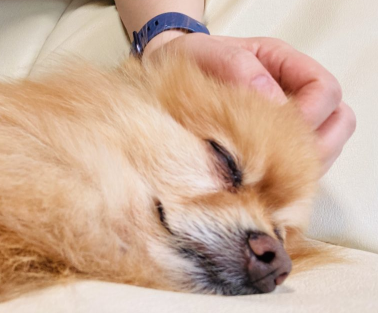

渡辺アニマルクリニックは完全予約制となっております。往診も行っています。

▼ 病院案内
当院は予約制です。
診察希望の方は、お電話にてご予約下さい。☎080-2806-6796
コロナウィルス対策として、診察室に入室されるのは一家族お一人様でお願い致します。
来院の際は、ねこちゃんはキャリーバッグに入れて、わんちゃんはキャリーバッグもしくはリードを着けていただきますようお願い致します。
ご自宅での診療や在宅ケアを受けられるように往診も対応しています。
ご相談下さい。（毎日の検温を済ませてからお伺い致します。）
【診療可能エリア】
- 河北町を中心におおよそ10㎞圏内にお伺い致します。
- 診療可能エリアにつきましてはお電話にてご相談下さい。
- 診察料金とは別に往診料金をいただいております。
【お願い事項】
- 当院は予約制となりますので、お電話にてご予約をお願い致します。
- 高度医療設備が無いため、当院では治療が難しい病気もございます。
- ご予約いただく際にお電話にてどのような症状かお聞かせ下さい。
- 症状によっては他院での診察をお勧めさせていただく場合もございますのでご了承下さい。
▼ 診療案内
犬、猫などの病気予防と内科・外科疾患の治療を主に行います。
【診療対象動物】
犬、猫など
【診療対象動物】
- 犬、猫など

わんちゃんの予防
フィラリア予防
- 毎年予防薬投与前に血液検査でフィラリア寄生有無を調べます。
- ６月から１１月の間、毎月１回、１か月間隔でチュアブルタイプ（錠剤）の予防薬です。
感染症予防
- 6種混合ワクチン
(犬ジステンパー、犬伝染性肝炎、犬アデノウィルス(Ⅱ型)、パラインフルエンザ、パルボウィルス、コロナウィルス)
- 発生頻度が高く、重篤化しやすい感染症6種の混合ワクチン。
- 生後4週齢以上の犬に3~4週間隔で数回接種します。
- 狂犬病予防注射
- 生後91日以上の犬に、年1回の予防接種が狂犬病予防法により義務付けられています。
- 基本的には4~6月に実施します。
ノミ・マダニ・内部寄生虫予防
- 首の後ろに予防薬を滴下するスポットタイプと、食べるチュアブルタイプ（錠剤）の予防薬があります。
- お外で暮らしているわんちゃんなどは定期的な検便をおすすめします。
- フィラリア予防
- 毎年予防薬投与前に血液検査でフィラリア寄生有無を調べます。
- ６月から１１月の間、毎月１回、１か月間隔でチュアブルタイプ（錠剤）の予防薬です。
- 感染症予防
- 6種混合ワクチン
(犬ジステンパー、犬伝染性肝炎、犬アデノウィルス(Ⅱ型)、パラインフルエンザ、パルボウィルス、コロナウィルス)- 発生頻度が高く、重篤化しやすい感染症6種の混合ワクチン。
- 生後4週齢以上の犬に3~4週間隔で数回接種します。
- 狂犬病予防注射
- 生後91日以上の犬に、年1回の予防接種が狂犬病予防法により義務付けられています。
- 基本的には4~6月に実施します。
- ノミ・マダニ・内部寄生虫予防
- 首の後ろに予防薬を滴下するスポットタイプと、食べるチュアブルタイプ（錠剤）の予防薬があります。
- お外で暮らしているわんちゃんなどは定期的な検便をおすすめします。
ねこちゃんの予防
感染症予防
- 猫3種混合ワクチン
- 猫ウィルス性鼻気管炎、猫カリシウィルス感染症、猫汎白血球減少症
- 猫5種混合ワクチン
- 猫3種混合ワクチンに加え、猫クラミジア感染症、猫白血病ウィルス感染症
ノミ・マダニ・内部寄生虫予防
- 首の後ろに滴下するスポットタイプの予防薬です。
- お外に出るねこちゃんは定期的な検便をおすすめします。
【その他】
- 各種ペットフード取り扱っております。幼犬、幼猫期～シニア期に適したフードや療法食などご相談下さい。
- 爪切りなど簡単なグルーミングも行っておりますのでご相談下さい。
【お受けできない内容】
- 当院には血液検査機器・麻酔器具がありませんので各種手術(避妊・去勢手術など)は受け付けておりません。
- レントゲンの撮影、エコー検査も機器が無いためお受けできません。
- 感染症予防
- 猫3種混合ワクチン
- 猫ウィルス性鼻気管炎、猫カリシウィルス感染症、猫汎白血球減少症
- 猫5種混合ワクチン
- 猫3種混合ワクチンに加え、猫クラミジア感染症、猫白血病ウィルス感染症
- ノミ・マダニ・内部寄生虫予防
- 首の後ろに滴下するスポットタイプの予防薬です。
- お外に出るねこちゃんは定期的な検便をおすすめします。
【その他】
- 各種ペットフード取り扱っております。幼犬、幼猫期～シニア期に適したフードや療法食などご相談下さい。
- 爪切りなど簡単なグルーミングも行っておりますのでご相談下さい。
【お受けできない内容】
- 当院には血液検査機器・麻酔器具がありませんので各種手術(避妊・去勢手術など)は受け付けておりません。
- レントゲンの撮影、エコー検査も機器が無いためお受けできません。